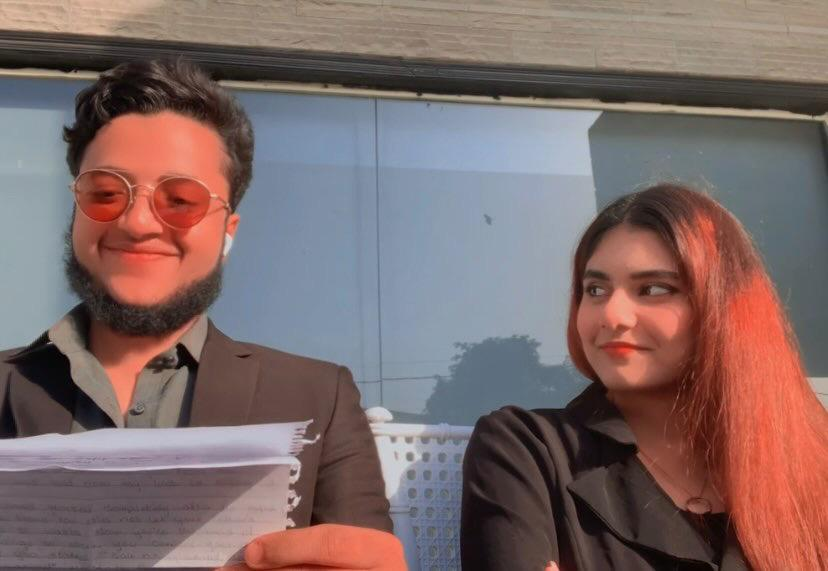
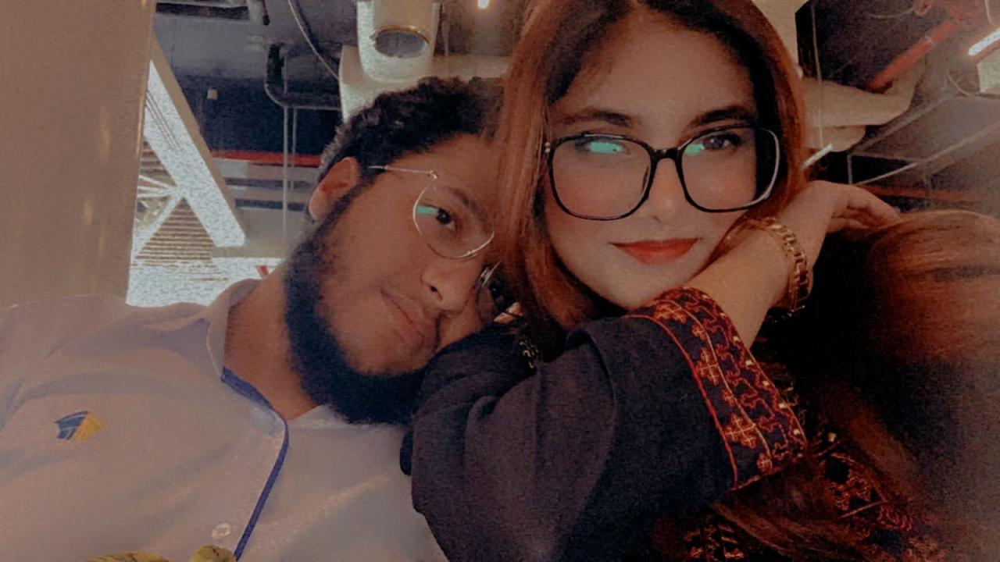
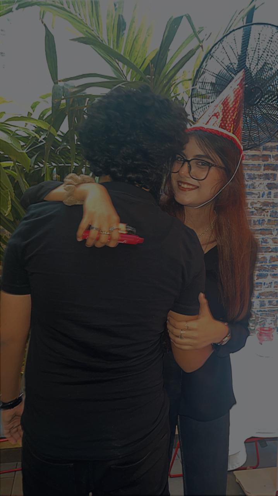
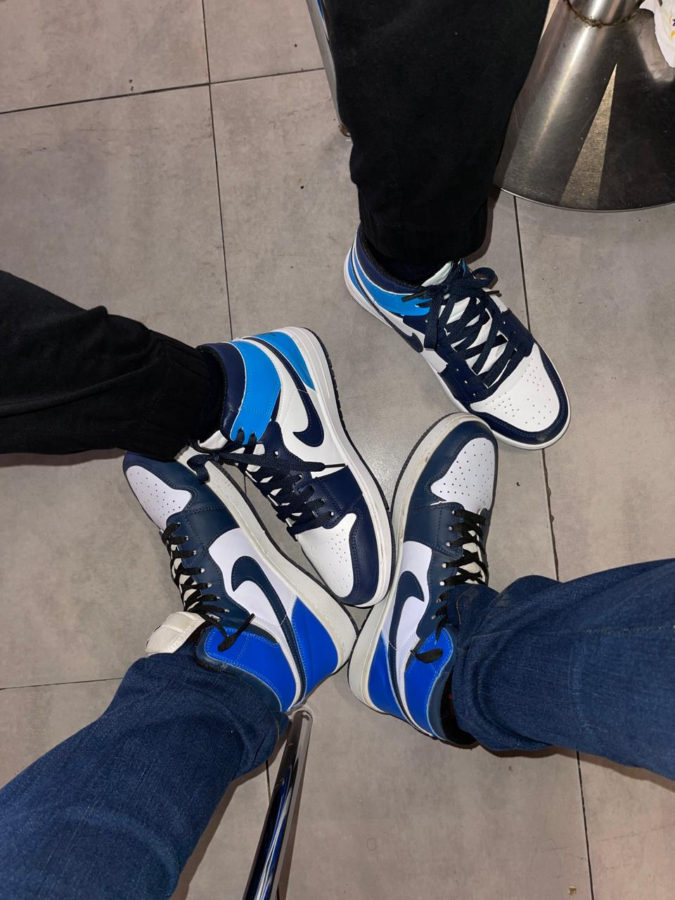
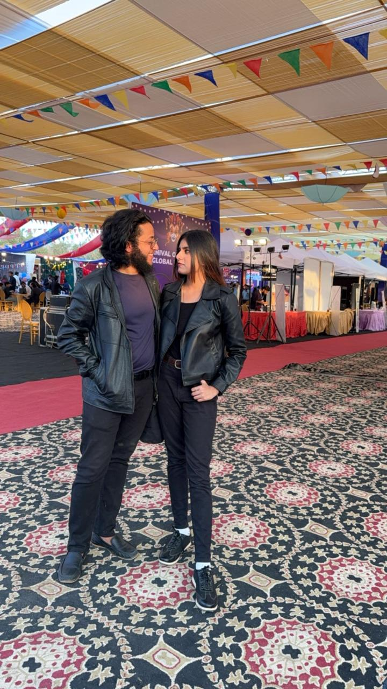
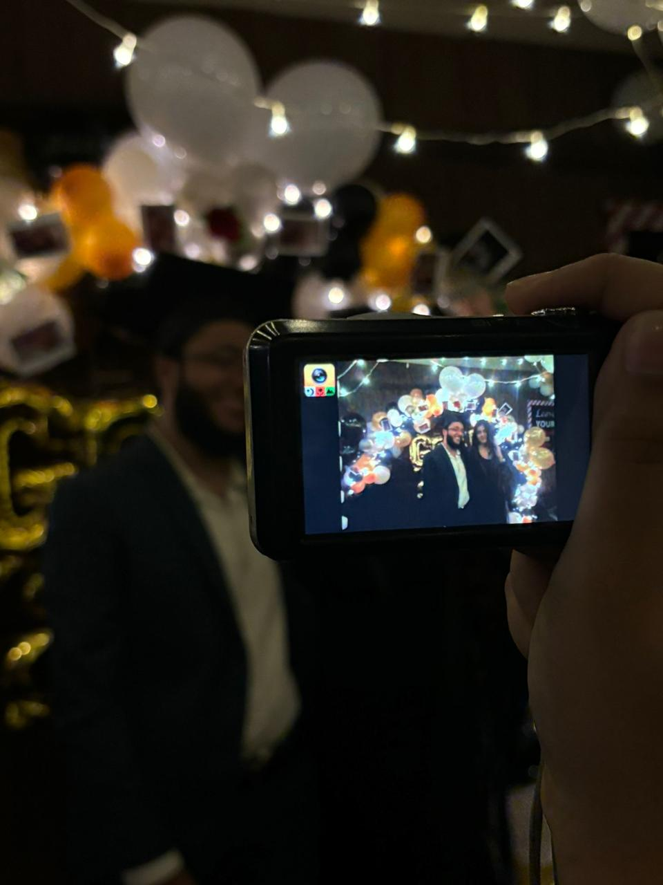
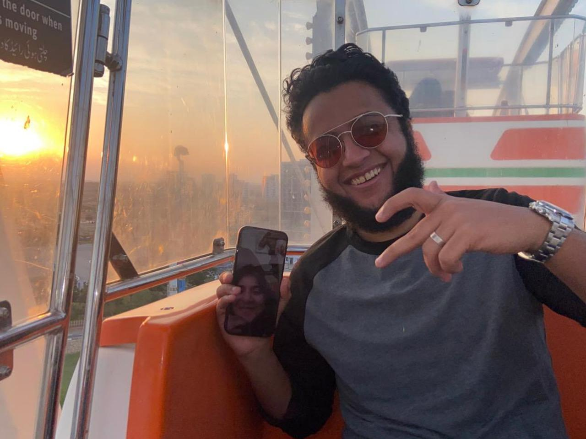

<!DOCTYPE html>
<html lang="en">
<head>
<meta charset="UTF-8">
<meta name="viewport" content="width=device-width, initial-scale=1.0">
<title>For Riha ❤️</title>

<style>
body {
    margin: 0;
    font-family: 'Arial', sans-serif;
    overflow-x: hidden;
    background: linear-gradient(270deg, black, red);
    background-size: 400% 400%;
    animation: gradientBG 20s ease infinite;
    color: white;
}

@keyframes gradientBG {
    0% { background-position: 0% 50%; }
    50% { background-position: 100% 50%; }
    100% { background-position: 0% 50%; }
}

section {
    display: none;
    padding: 40px 20px;
    min-height: 100vh;
    box-sizing: border-box;
    text-align: center;
    opacity: 0;
    transform: translateY(30px);
    transition: all 1s ease;
}

section.active {
    display: block;
    opacity: 1;
    transform: translateY(0);
}

p {
    max-width: 700px;
    margin: 0 auto 20px auto;
    line-height: 1.6;
}

.slideshow {
    max-width: 600px;
    margin: 20px auto;
}

.slideshow img {
    width: 100%;
    display: none;
    border-radius: 15px;
}

.slideshow img.active {
    display: block;
}

.video-section {
    display: flex;
    gap: 20px;
    justify-content: center;
    align-items: center;
    flex-wrap: wrap;
}

.video-section video {
    max-width: 400px;
    border-radius: 15px;
}

.video-caption {
    max-width: 400px;
    text-align: left;
    font-size: 18px;
}

.nav-button {
    margin-top: 30px;
    padding: 15px 30px;
    font-size: 20px;
    border-radius: 30px;
    border: none;
    cursor: pointer;
    background: rgba(255,255,255,0.1);
    color: white;
}

.nav-button:hover {
    background: rgba(255,255,255,0.3);
}

.final-letter {
    max-width: 800px;
    margin: auto;
    text-align: left;
    font-size: 20px;
    line-height: 1.8;
    white-space: pre-line;
}
</head>

<body>

<section id="section1" class="active">
    <h2>For Riha ❤️</h2>

    <p>
        Some love stories are loud.<br>
        Ours learned how to whisper <br>
        through screens, through time zones,<br>
        through patience and faith.<br><br>
        Somehow, even across the distance,<br>
        we always found our way back to each other.<br><br>
        And before we go any further…<br>
        there’s something I want you to see.
    </p>

    <div class="slideshow">
        
        
        
        
        
        
        
        
        
        
        
        
        
        
        
        
        
        
        
        
        
        
        
        
        
        
        
        
    </div>

    <button class="nav-button" onclick="nextSection()">💖 Shall we start?</button>
</section>

<section id="section2">
    <div class="video-section">
        <video controls src="Videos/video1.mp4"></video>
        <div class="video-caption">
            <p>
                I don’t think there was ever one moment.<br>
                I fell in love with you slowly <br>
                in the way you spoke,<br>
                in the way you cared,<br>
                in the way you made ordinary days feel lighter.<br><br>
                Somewhere between conversations and laughter,<br>
                my heart made its decision…<br>
                and it chose you.
</p>
        </div>
    </div>
    <button class="nav-button" onclick="nextSection()">➡️ Falling deeper</button>
</section>

<section id="section3">
    <div class="video-section">
        <video controls src="Videos/video2.mp4"></video>
        <div class="video-caption">
            <p>
                Loving you never stayed the same.<br>
                It grew quietly, endlessly.<br>
                Every day I discovered a new reason to adore you,<br>
                a new reason to feel grateful,<br>
                a new reason to believe that this love was real.<br><br>
                I didn’t just fall in love with you once…<br>
                I kept falling, again and again.
</p>
        </div>
    </div>
    <button class="nav-button" onclick="nextSection()">➡️ Through every boundary</button>
</section>

<section id="section4">
    <div class="video-section">
        <video controls src="Videos/video3.mp4"></video>
        <div class="video-caption">
            <p>
                Distance tried to test us.<br>
                It gave us quiet nights,<br>
                delayed hugs,<br>
                and moments where missing each other hurt a little more.<br><br>
                But love didn’t weaken <br>
                it adapted.<br>
                We learned how to be close without touching,<br>
                how to hold each other with words,<br>
                and how to choose each other, every single day.
</p>
        </div>
    </div>
    <button class="nav-button" onclick="nextSection()">➡️ One year apart</button>
</section>

<section id="section5">
    <div class="video-section">
        <video controls src="Videos/video4.mp4"></video>
        <div class="video-caption">
            <p>
                A full year of waiting.<br>
                A full year of patience.<br>
                A full year of choosing love, even when it wasn’t easy.<br><br>
                And yet… here we are.<br>
                Still laughing.<br>
                Still dreaming.<br>
                Still certain.<br><br>
                Distance didn’t change us, it proved us.
</p>
        </div>
    </div>
    <button class="nav-button" onclick="nextSection()">❤️ Read my heart</button>
</section>

<section id="section6">
    <audio id="musicFinal" src="music/final.mp3" loop></audio>
    <div class="final-letter">
 Riha, ❤️

Another Valentine’s Day found us a little apart in distance,
but never apart in heart.
And somehow, that still amazes me
how love like ours refuses to shrink,
even when the world tries to stretch it thin.

These past months have been busy.
Heavy days, long nights, responsibilities pulling us in different directions.
And yet… in between all of that, we still found each other.
A message here.
A call there.
A laugh squeezed into a tired moment.
Love, choosing to show up, quietly, consistently.

This is our fourth Valentine together,
and it honestly feels unreal how fast time has flown.
Four years of memories, growth, learning, and loving — 
it doesn’t feel like years have passed…
it feels like we blinked,
and suddenly we were here 
stronger, deeper, more certain than ever.

Loving you has never been loud or forced.
It’s been steady.
Comforting.
Safe.
The kind of love that doesn’t need to prove itself,
because it’s already home.

I know there will be days ahead that aren’t easy.
Moments where life feels overwhelming.
Times when the distance feels heavier than usual.
But I want you to know this, without doubt, without hesitation 
I will always be here.
In your difficult days.
In your victories.
In your silence.
In your joy.

I can’t wait for the day when distance is no longer part of our story.
When Valentine’s Day isn’t screens and time zones,
but shared mornings, shared laughter, shared plans.
When we celebrate not just love 
but us,
as husband and wife,
choosing each other every single day.

Until then,
we keep doing what we’ve always done best 
loving patiently,
growing together,
and believing in the future we’re building.

And if love ever needed proof,
it would look like us 
choosing each other quietly, bravely, again and again.

No matter the distance.
No matter the time.
No matter how the world shifts around us.

I choose you
in the waiting,
in the becoming,
in every tomorrow that hasn’t arrived yet.

I love you, Riha. ❤️

Always you.
Always us.
Always, with my whole heart. ✨🌹
    </div>

<script>
let currentSection = 1;
const totalSections = 6;

function nextSection() {
    document.getElementById('section' + currentSection).classList.remove('active');
    currentSection++;
    if (currentSection > totalSections) currentSection = totalSections;

    document.getElementById('section' + currentSection).classList.add('active');

    if (currentSection === totalSections) {
        document.getElementById('musicFinal').play().catch(()=>{});
    }
}

// SLIDESHOW
let slideIndex = 0;
const slides = document.querySelectorAll('.slideshow img');

function showSlides() {
    slides.forEach(img => img.classList.remove('active'));
    slides[slideIndex].classList.add('active');
    slideIndex = (slideIndex + 1) % slides.length;
    setTimeout(showSlides, 2000);
}

showSlides();
</script>

</body>
</html>
